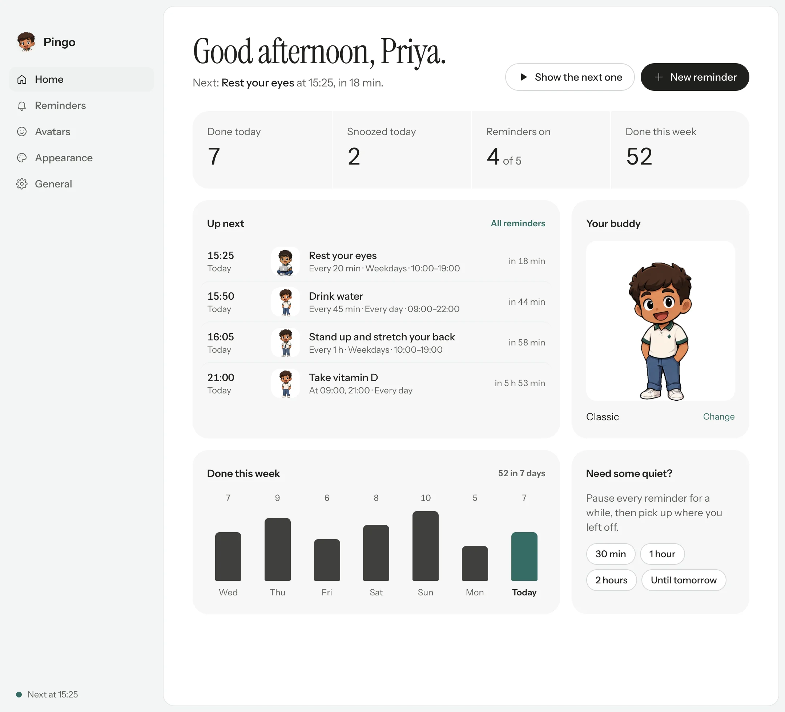
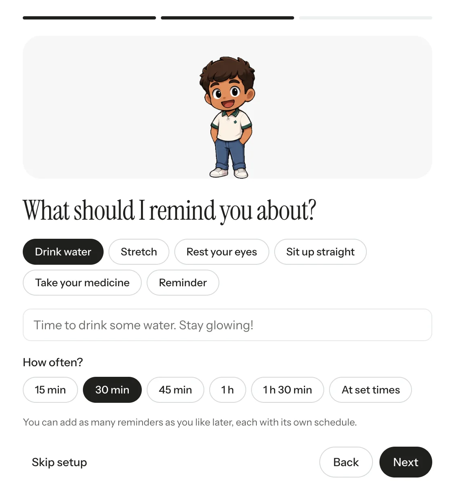

A little character who walks onto your Mac’s screen to remind you to drink water, stretch or take your medicine.

PINGO

Everything in one window.
What’s next, what you’ve done today and how your week went.
Priya, time for a glass of water.
Try a reminder.
Add “every 20 min” or “at 9:00 and 21:00” to set when.
Every 45 minutes, every day
What it does
Reminders
- As many as you like
- Every few minutes
- At set times
- On the days you pick
- Inside your hours
- Its own snooze
- Six starting points
Characters
- Three bundled
- Your own picture
- Animated GIFs
- Background cut-out
- A celebration pose
- Size and mirror
- One per reminder
Look and feel
- Light and dark
- Two bubble styles
- Six accents
- Character size
- Either corner
- A sound, or none
- Auto-snooze
Make Pingo yours.
Pick a character, or drop in any picture or animated GIF. The background cuts out by itself, and each reminder can have its own.
- Classic
- ID badge
- Sticker
- Your own


From download to first reminder
To begin, download Pingo and drag it into Applications. The first time, macOS asks you to confirm in Privacy & Security. You only do that once.
Next, three quick questions: what to call you, what to remind you about and how often, and who should do the reminding.

After that, Pingo waits in your menu bar. Add more reminders, change characters, or pause it for a meeting.
From then on, Pingo walks onto the corner of your screen when it’s time. Press Done and it celebrates. Press Snooze and it comes back later.
Questions
Is it really free?
Yes. It is free and open source under the MIT licence. There is no trial, no account and nothing to upgrade to.
Does it collect anything?
No. Pingo makes no network requests at all. Your settings, characters and counts stay on your Mac.
How many reminders can I have?
Up to fifty, each with its own words, schedule, days, hours, snooze length and character.
Can I use my own character?
Yes. Any PNG, JPG, WebP or animated GIF. Plain backgrounds are cut out for you, and GIFs keep moving.
Why does macOS stop it the first time?
Pingo isn’t notarised by Apple yet. Open System Settings, then Privacy & Security, and choose Open Anyway.
Windows and Linux?
Builds for both are on the Releases page on GitHub.